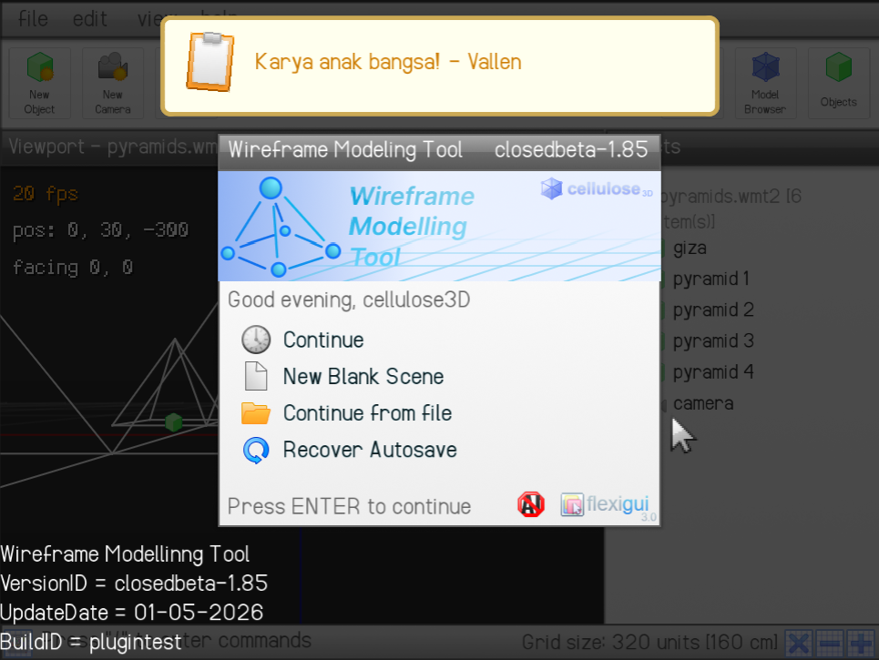
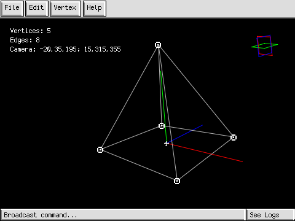
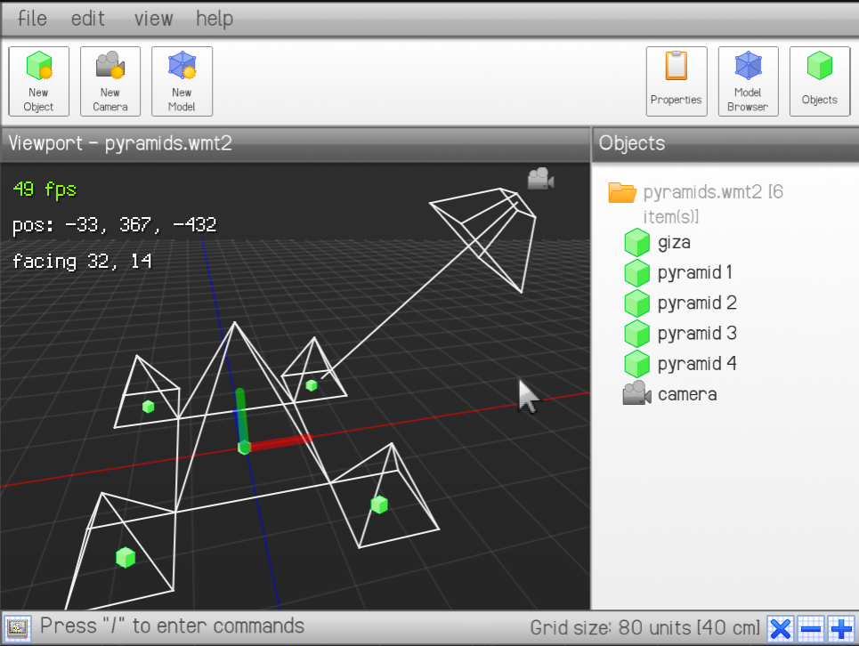

About FlexiGUI
FlexiGUI is a graphical user interface framework developed by Vallen Alexander to make adaptive graphical user interfaces in Scratch easier to make. The need to make such user interface framework stems from the tedious-ness of manually building a GUI in Scratch using sprites and costumes, and having code separated across multiple sprites.


FlexiGUI was first used on the first version of Wireframe Modelling Tool, and Version 3.0 is used on the second version of Wireframe Modelling Tool, with a massive change in how the interface works, looks like, and how the modern user interface is made more intuitive to the user..


Feature set
The latest version of FlexiGUI (Version 4) supports the following graphical user interface elements:
- Text labels, with customizable colors using HSB values, center and right side align, multiple sizes, and text wrap.
- Text buttons with two presets including normal (common buttons) and confirm (highlighted buttons that stand out), customizable colors, stroke color and thickness, hover color, tooltips, UI layer filtering (to disable everything except the currently focused subject of an interface, and more.
- Image labels (stamped costumes) with customizeable effects and sizes that can be done with one single block instead of multiple blocks.)
- Image buttons with the same features as an image label
- Multiple forms of input, including dropdowns, sliders, and text fields.
- On screen keyboard. for mobile accessibility.
- Menu-and-layer system to select what menu to show and what subject is focused.
With these features, a developer can create complex graphical user interfaces that makes it easier to convey information to the user, and makes it intuitive for the user to navigate the software.
Updates to FlexiGUI
Over time, FlexiGUI receives updates expanding functionality and fixing bugs in the framework.
- FlexiGUI 2.0 adds custom colors to UI box elements, and an improved version with text markup was made for terminal interfaces.
- FlexiGUI 3.0 is the first major overhaul adding an on-screen keyboard, vector text, and improved box renderer that runs faster than the older pre-3.0 scanline version.
- FlexiGUI 4.0 is an addition to Version 3.0 which adds input elements, style presets, tooltips, and more.
Projects using FlexiGUI
These are the projects that use FlexiGUI in some way for a GUI.
- Wireframe Modelling Tool by Vallen Alexander (aka Cellulose3D).
- Advanced Photo Viewer by Vallen Alexander (aka Cellulose3D).
- Portal 2 ending credits made in FlexiGUI, by Vallen Alexander (aka Cellulose3D).
- wescomOS 5.0, by Vallen Alexander (aka Cellulose3D).
Deprecating FlexiGUI.
We are currently developing a new and improved rewrite of the entire graphical user interface framework named the "Paper" GUI engine that adds more input elements, and a better, faster system that will outperform the old FlexiGUI 3.0 style in text rendering, box rendering, and more, using more elegant and readable code, and fixing visual artifacts due to flaws in FlexiGUI's rendering.
Currently, this version is still in unstable closed beta, and will take a lot more time to complete as a solo project made by Vallen Alexander. If you want to help, contact me in my email!